la ofi
Manual de servicio · Equipo
Un pedido, del QR al cierre de caja
Qué hace cada persona en cada momento del servicio: el cliente desde su móvil, cocina y barra en su pantalla, sala en el plano y el TPV, y el encargado al cerrar. Todas las capturas son del sistema real.
Quién hace qué
Cuatro papeles, un mismo pedido
Cada paso del manual lleva el color de quien lo hace. El mismo código de colores se usa en el mapa de abajo.
Cliente
Pide y sigue su pedido desde el móvil con el QR de su mesa. No instala nada.
Cocina y barra
Recibe las comandas en su pantalla y las marca como aceptadas, en preparación y listas.
Sala
Atiende avisos, sirve lo que está listo, toma comandas en el TPV y cobra.
Encargado/a
Prepara mesas y QR, mantiene la carta y cierra la caja al final del turno.
El recorrido
De la mesa a la caja en nueve momentos
Cada recuadro lleva a su paso. La línea temporal avanza de izquierda a derecha y cambia de carril cuando cambia quien actúa.
Si alguien prefiere pedir al camarero, sala toma la comanda en el TPV y el pedido sigue igual desde «Prepara».
Ayuda en el panel
La i explica cada pantalla
Arriba a la derecha de cualquier pantalla del panel hay un botón i. Abre una explicación de esa pantalla: para qué sirve, cómo se usa paso a paso, qué significan sus colores y algunos trucos.
Un punto rojo en la i indica que todavía no has abierto la ayuda de esa pantalla en ese dispositivo.
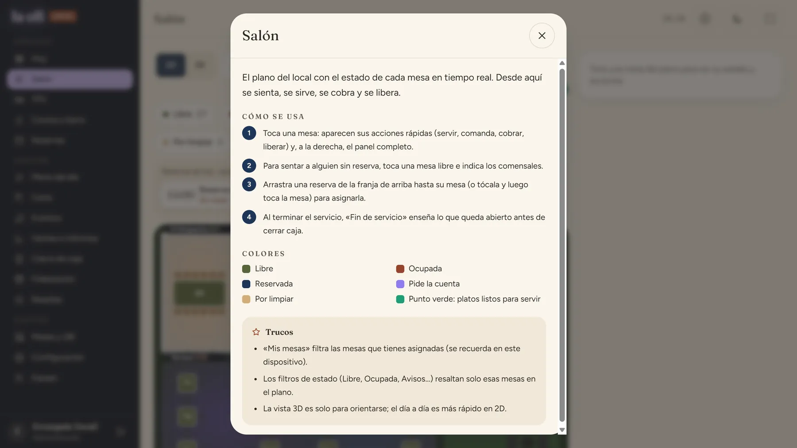
Prepara las mesas
Cada mesa tiene su propio código QR. Es lo que le dice al sistema desde qué mesa se pide.
- Imprime los QR en lote a escala 100 % (plantilla de metacrilato A6).
- Coloca cada uno en su mesa. No los intercambies: el QR de la Mesa 1 siempre pide para la Mesa 1.
- Si uno se pierde o alguien lo usa desde fuera, regéneralo en Mesas y QR: el impreso deja de funcionar y se imprime el nuevo.
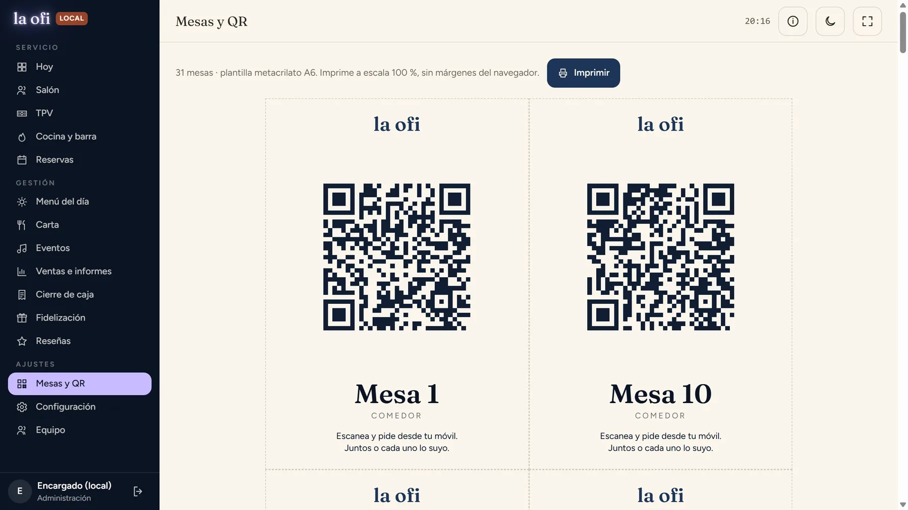
El cliente escanea y elige cómo pedir
Sin instalar nada ni registrarse: la cámara del móvil abre la carta de su mesa.
- «Todos juntos»: una sola cuenta para la mesa; cualquiera puede añadir platos.
- «Cada uno lo suyo»: cada comensal pide y paga lo suyo, y se pueden compartir platos.
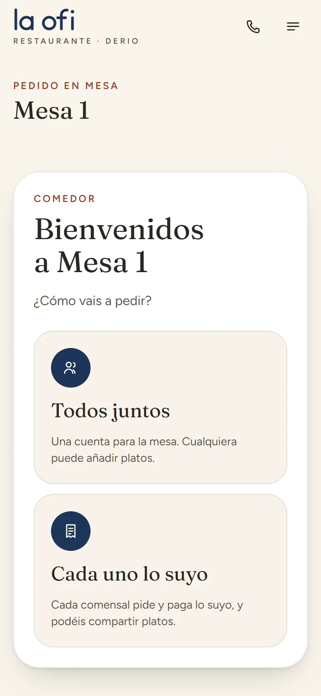
12Elige los platos
La carta muestra precios, alérgenos y filtros por momento del día. Siempre a mano: llamar al camarero y ver la cuenta.
- «Llamar al camarero» avisa a sala con sonido.
- «Cuenta» enseña lo consumido y permite pedirla.
- «Añadir» mete el plato en el pedido; la barra inferior lleva la cuenta.
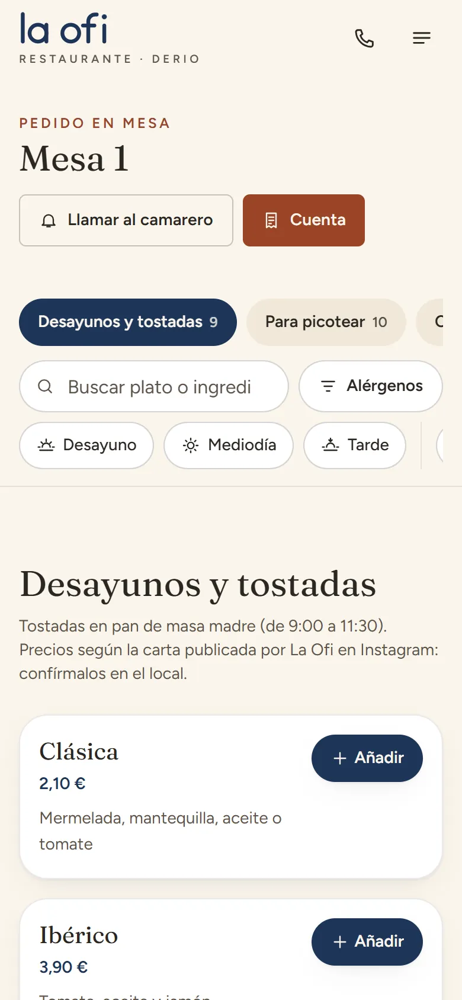
123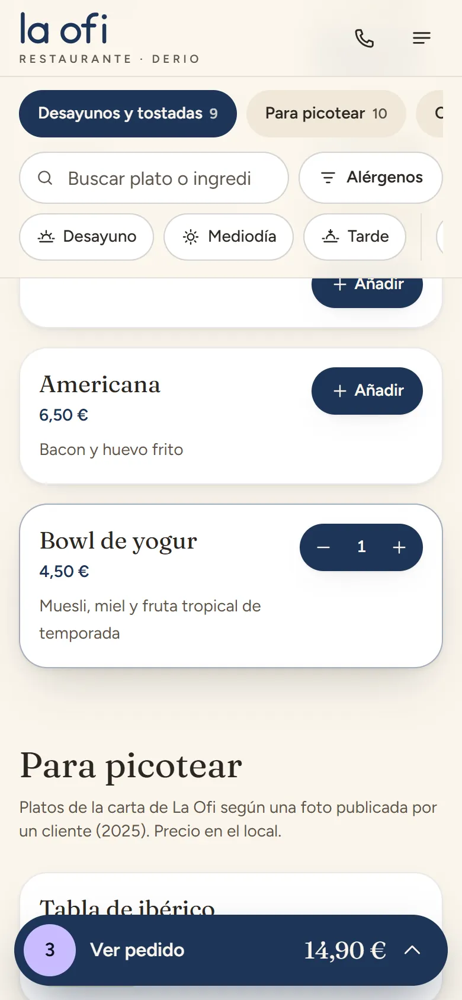
Revisa y envía el pedido
Antes de enviar puede cambiar cantidades y dejar notas para cocina.
- Notas para cocina: alergias, «sin miel», el punto de la carne…
- «Enviar pedido» lo manda al momento a cocina y barra. Puede volver a pedir cuando quiera: todo suma a la misma mesa.
Bueno saberEl cliente ve el estado de su pedido en directo: Recibido → Aceptado → En preparación → ¡Listo! → Entregado.
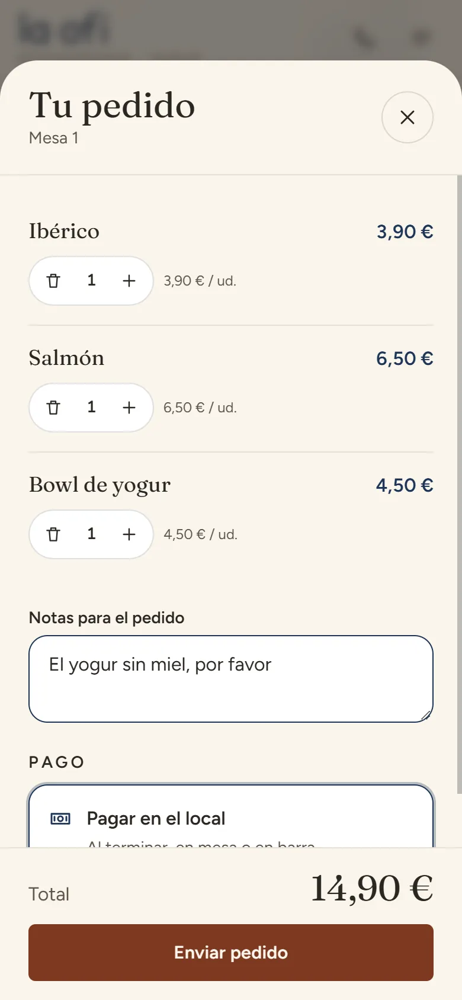
12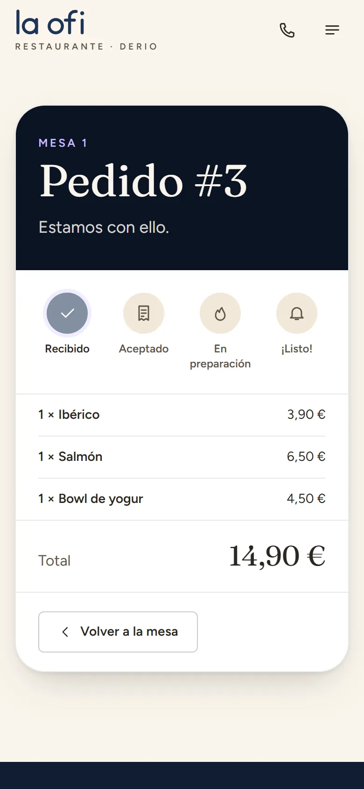
El local lo recibe
La pantalla «Hoy» resume el servicio sin hacer scroll y se actualiza sola cada 10 segundos.
- El contador «En cocina y barra» sube y avisa de cuántos pedidos están sin aceptar.
- «Pedidos en marcha» muestra la comanda nueva con su mesa y los minutos que lleva.
- «Nueva comanda» abre el TPV para quien prefiere pedir al camarero.
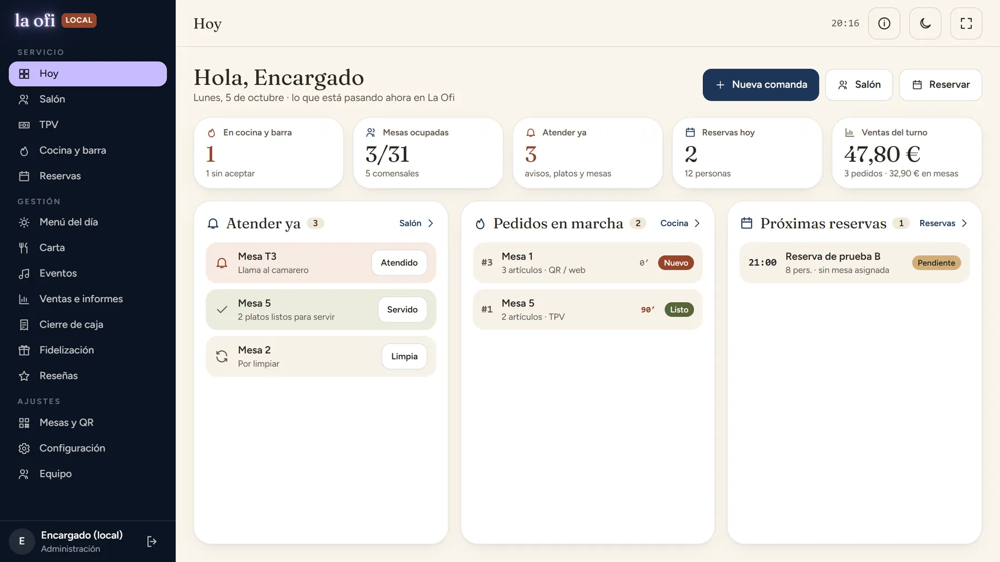
123Cocina y barra lo preparan
Cada comanda entra en «Nuevos» y avanza por columnas. Cocina y barra mueven solo sus propias líneas.
- Pestañas Todos / Cocina / Barra: cada estación ve solo lo suyo.
- Las notas del cliente aparecen destacadas en la comanda.
- «Aceptar», después «Empezar» y por último «Listo».
- «Activar sonido» al empezar el turno, para oír los pedidos nuevos.
Bueno saberEl borde de cada comanda pasa a ámbar a los 10 minutos y a rojo a los 20. El pedido no está listo hasta que cocina y barra terminan su parte.
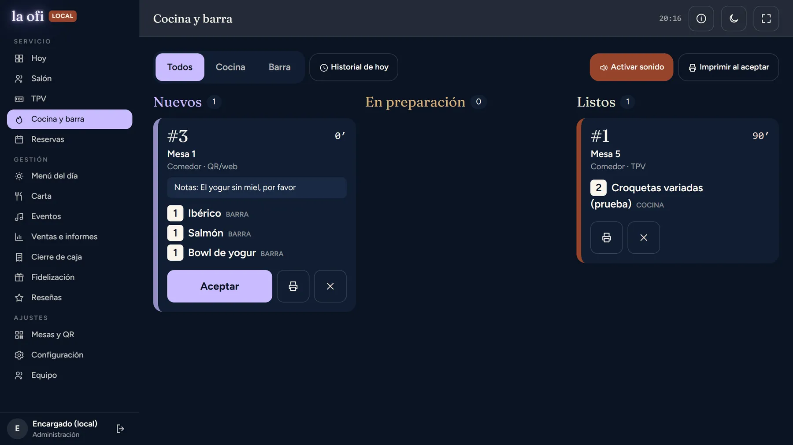
1234Sala lo sirve en mesa
Cuando hay platos listos, la mesa sale en «Atender ya» y con un punto verde en el plano.
- En Hoy, «Servido» en la fila de la mesa al llevar los platos.
- O en el Salón: toca la mesa y «Servir 3 platos listos».
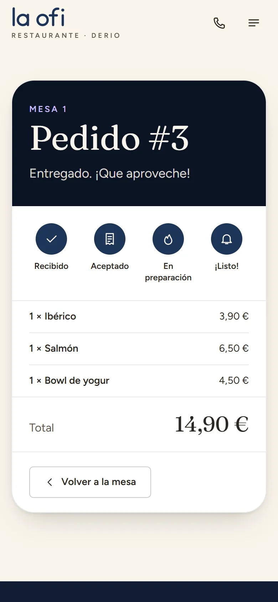
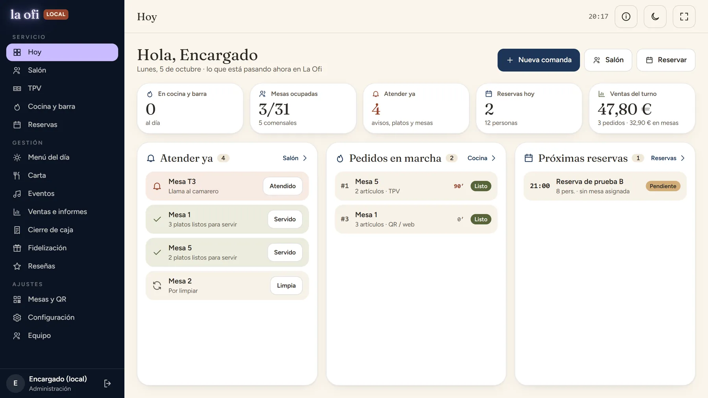
1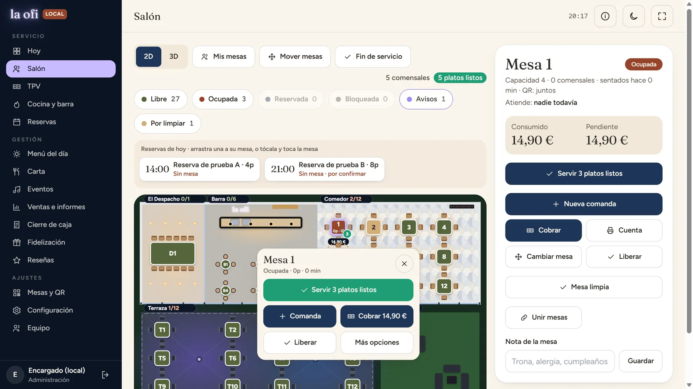
2Si piden al camarero
No todo el mundo usa el QR. La comanda tomada a mano entra en cocina y barra igual que la del cliente.
- En «Para», elige la mesa (las ocupadas salen primero) o la barra.
- Toca los productos; ajusta cantidades, notas, invitaciones y descuento.
- «Enviar a cocina».
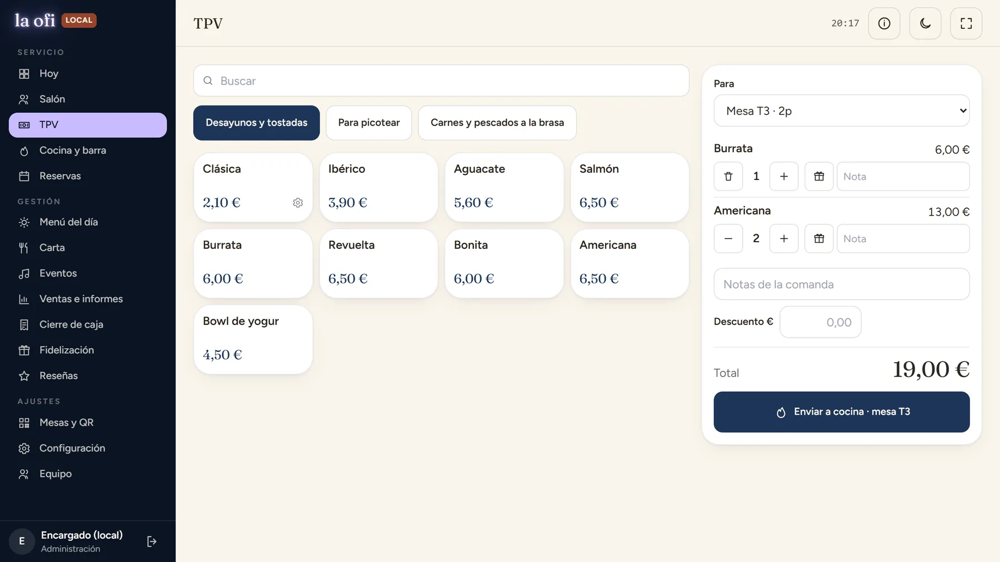
123El cliente pide la cuenta
Desde el móvil ve todo lo consumido por la mesa y avisa con un toque. El botón se bloquea para no repetir el aviso.
- «Pedir la cuenta» en el móvil.
- En Hoy aparece «Pide la cuenta» con el importe y el botón «Cobrar».
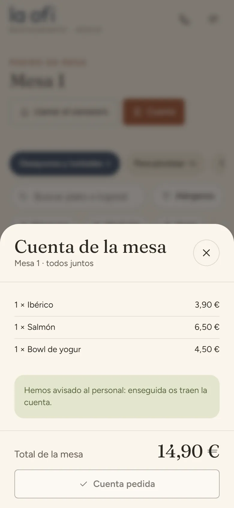
1Cobrar
«Cobrar» abre la mesa en el Salón con el consumo y lo pendiente. «Cuenta» imprime el ticket si lo quieren en papel.
- Si pagan a partes iguales, elige entre cuántos y se cobra parte a parte.
- En efectivo, toca el billete entregado…
- …y el sistema calcula el cambio.
- Efectivo o Tarjeta para registrar el cobro.
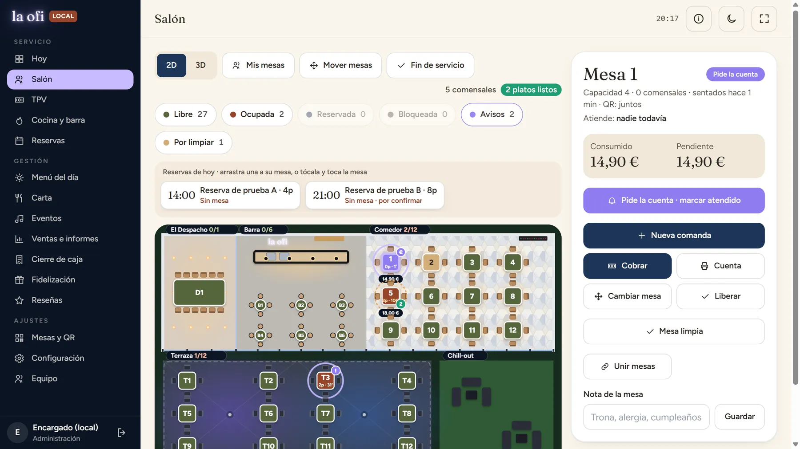
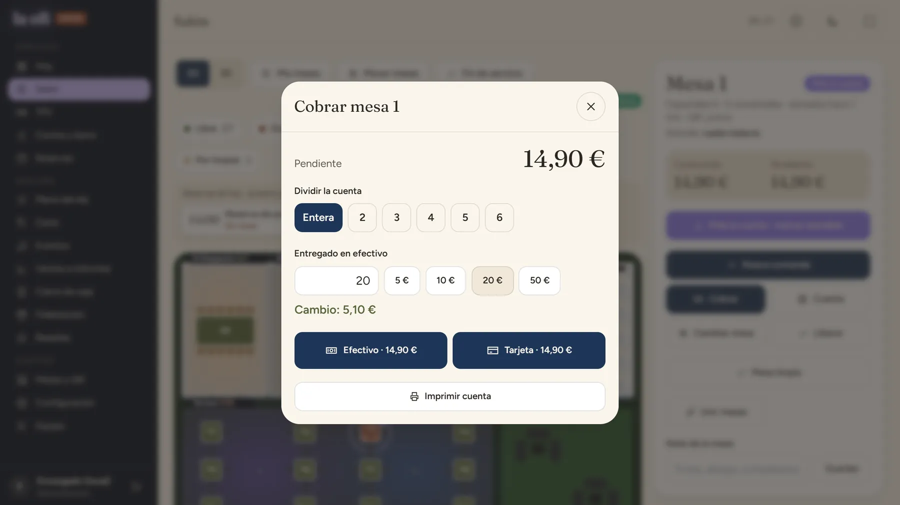
1234Liberar y limpiar la mesa
Con todo cobrado la mesa sigue abierta: pueden quedarse de sobremesa.
- Cuando se vayan, «Liberar» en la fila «Pagada».
- Pasa a «Por limpiar». Al recogerla, «Limpia»: vuelve a estar libre en el plano.
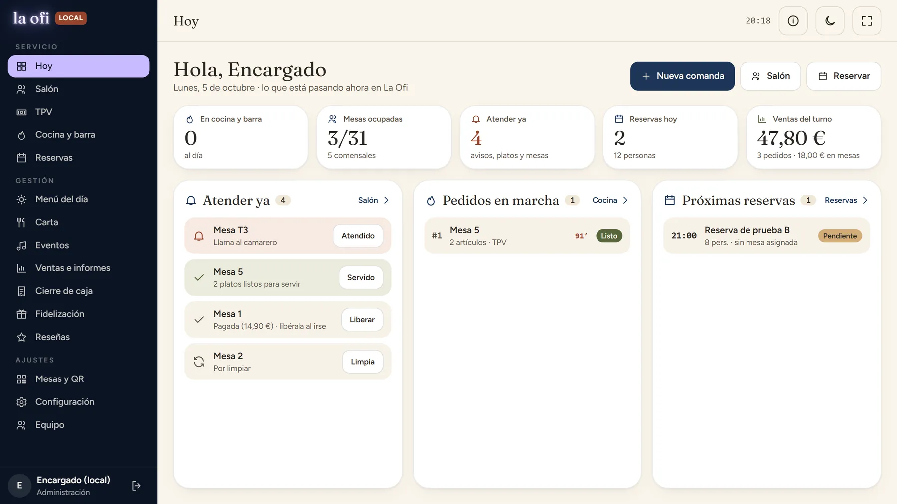
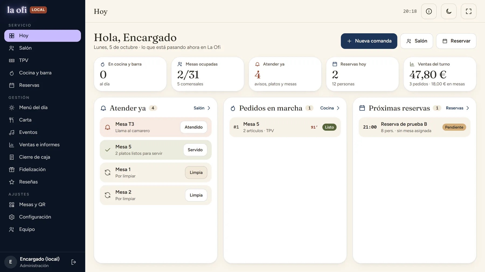
Cierre de caja
Al terminar el turno se compara el efectivo que debería haber con el contado.
- Revisa ventas, cobros por método y lo pendiente de cobro (debe quedar a cero; si no, mira «Fin de servicio» en el Salón).
- Indica el fondo de caja y cuenta el efectivo, por billetes y monedas o el total.
- Comprueba el descuadre y cierra. El cierre queda en el historial y se puede imprimir.
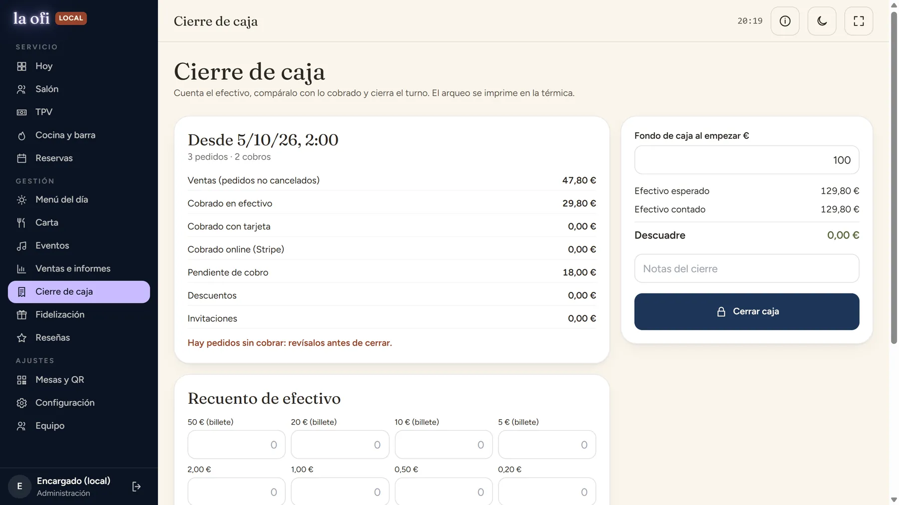
Chuleta
Para tener a mano
Estados de un pedido
- RecibidoHa llegado; nadie lo ha aceptado aún.
- AceptadoCocina o barra lo ha visto.
- En preparaciónSe está haciendo.
- ¡Listo!Para servir: sale en «Atender ya».
- EntregadoServido en mesa.
Colores de las mesas
- Libre
- Ocupada
- Reservada
- Pide la cuenta
- Por limpiar
- Platos listos (punto verde)
Qué hago si…
- La pantalla de cocina no suena
- Toca «Activar sonido» al empezar el turno. El navegador no deja sonar sin un primer toque.
- Un QR no funciona o se ha filtrado
- Mesas y QR → la mesa → «Regenerar». Imprime el nuevo; el antiguo deja de valer.
- Ya han pagado pero la mesa sigue ocupada
- Es a propósito, por si siguen sentados. Al irse, «Liberar» en Hoy.
- Quieren pagar a partes
- En «Cobrar», elige entre cuántos se divide y cobra cada parte.
- Se ha acabado un plato
- Carta → «Agotado». Desaparece al momento del QR y de la web.
- Un pedido está mal
- En Cocina y barra, la X de la comanda la cancela. Vuelve a tomarla bien desde el TPV.
- Al cerrar caja hay pedidos sin cobrar
- Salón → «Fin de servicio» enseña qué mesas siguen abiertas.
- No sé qué hace una pantalla
- Toca la «i» de arriba a la derecha: explica esa pantalla, sus colores y trucos.